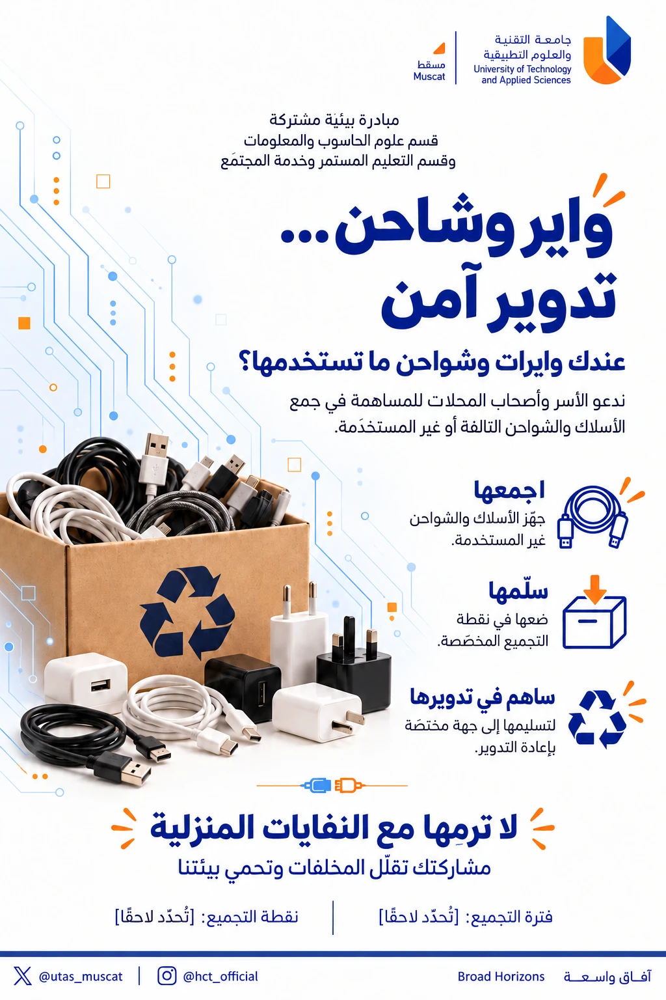
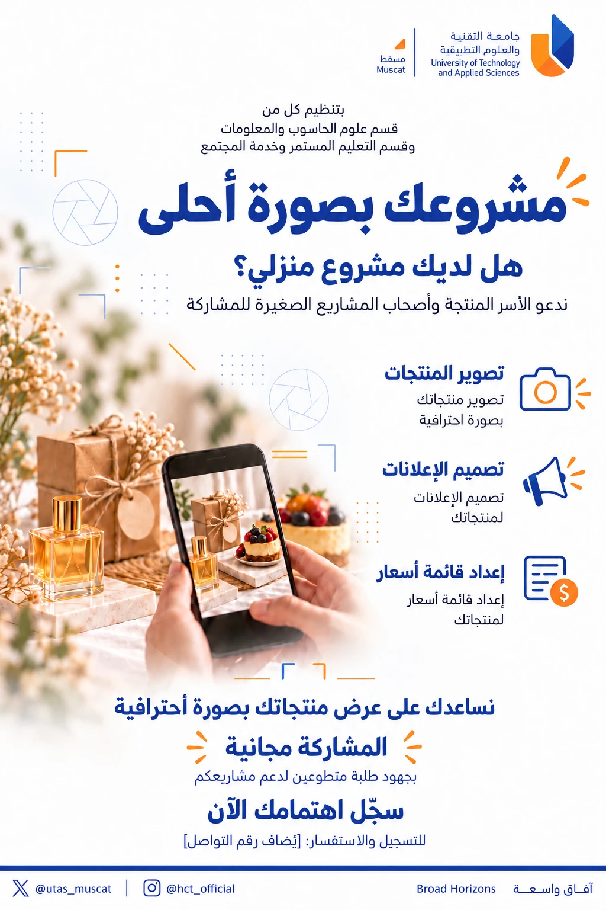

المهارات
تطوير مهارات الطلبة التقنية والإبداعية والمهنية من خلال أنشطة عملية.

قسم علوم الحاسوب والمعلومات CISخطة نوفمبر · خدمة المجتمع · اللجان
تكنو · TECHNO
جماعة طلابية تقنية من طلبة قسم علوم الحاسوب والمعلومات (CIS)، تعمل تحت مظلة النادي العلمي.
أهدافنا لهذا الفصل
تطوير مهارات الطلبة التقنية والإبداعية والمهنية من خلال أنشطة عملية.
تعزيز أثر تكنو من خلال الشراكات والمبادرات المجتمعية.
بناء فريق طلابي منظّم ونشط ومتعاون.
خريطة الشهر
ما الذي نعمل عليه هذا الشهر
فعالية نوفمبر
Specialization Day
يوم يربط الطلبة بـتخصصاتهم الأكاديمية، والفرص المتاحة لهم، والتجارب العملية.
تعرّف على تخصصك الأكاديمي ومساراته.
الفرص المتاحة للطلبة في كل تخصص.
خبرات عملية تقرّب التخصص من الواقع.
فعالية نوفمبر · لجنة الإعلام
Portrait Day
صور بروفايل احترافية للطلبة، ينظّمها فريق التصوير (Photography & Videography)
خدمة المجتمع
مبادرات وورش بالتعاون بين قسم علوم الحاسوب والمعلومات وقسم التعليم المستمر وخدمة المجتمع.
واير وشاحن… تدوير آمن
مشروعك بصورة أحلى
مهارات رقمية، ذكاء اصطناعي، أمان رقمي

مبادرة بيئية · خدمة المجتمع
صندوق تجميع للأسلاك والشواحن التالفة أو غير المستخدمة، تُسلَّم بعدها لجهة مختصة بإعادة تدوير المخلفات الإلكترونية.
جهّز الأسلاك والشواحن غير المستخدمة.
ضعها في نقطة التجميع المخصّصة.
نسلّمها لجهة مختصة بإعادة التدوير.

دعم المشاريع المنزلية · خدمة المجتمع
نساعد الأسر المنتجة وأصحاب المشاريع المنزلية على عرض منتجاتهم بصورة احترافية — مجانًا، بجهود طلبة متطوعين.
صور احترافية للمنتجات.
منشورات إعلانية للمنتجات.
منيو وقائمة أسعار واضحة.
مساعدة في الوصول للزبائن.
خدمة المجتمع · ورش
قائمة مقترحة — تُعتمد العناوين النهائية لاحقًا
نوفمبر
حدّدنا فريقًا من الأعضاء لإجراء المقابلات. التفاصيل تُستكمل بعد تأكيد نوع المقابلات.
التنظيم
الرئيس ← ثلاث لجان رئيسية ← أقسام
القسمرئيس اللجنةالرئيس
الرئيس لجنة الفعاليات
Events Committee
الهدف: تحويل الأفكار إلى فعاليات منظّمة وتجارب عملية مؤثرة.
Event Planning & Organization
Logistics & Operations
Makerspace / Creative Lab
Participant Coordination
الرئيس لجنة العلاقات
Relations Committee
الهدف: بناء جسور تكنو مع الجامعة والشركاء والمجتمع.
Partnerships & External Relations
University & Department Coordination
Community Outreach
Speakers & Sponsorships
الرئيس لجنة الإعلام
Media Committee
الهدف: نروي قصة تكنو بصورة احترافية وثابتة.
Social Media
Photography & Videography
التسجيل
بدل التسجيل العام ثم التوزيع: ينضم كل عضو مباشرةً إلى اللجنة التي تحتاجه.
النقاش
شكرًا لكم
المشاهد O للإغلاق · اختر مشهدًا
اضغط أو Esc للإغلاق
الاختصارات